Box filter (2 loops)
Part 1.1: Convolutions from Scratch
def convolve_4loop(image, kernel):
ih, iw = image.shape
kh, kw = kernel.shape
padded = np.zeros((ih + 2*kh - 2, iw + 2*kw - 2))
padded[kh - 1 : kh - 1 + ih, kw - 1 : kw - 1 + iw] = image
flipped = np.flip(kernel)
out = np.zeros((ih + kh - 1, iw + kw - 1))
for i in range(out.shape[0]):
for j in range(out.shape[1]):
product = 0
for x in range(kh):
for y in range(kw):
product += padded[i + x, j + y] * flipped[x, y]
out[i, j] = product
return out
def convolve_2loop(image, kernel):
ih, iw = image.shape
kh, kw = kernel.shape
padded = np.zeros((ih + 2*kh - 2, iw + 2*kw - 2))
padded[kh - 1 : kh - 1 + ih, kw - 1 : kw - 1 + iw] = image
flipped = np.flip(kernel)
out = np.zeros((ih + kh - 1, iw + kw - 1))
for i in range(out.shape[0]):
for j in range(out.shape[1]):
out[i, j] = np.sum(padded[i:i + kh, j:j + kw] * flipped)
return out
Both versions match scipy.signal.convolve2d. The 4 loop version took 1.49 s, the 2 loop version took 0.18 s, and scipy took 0.009 s.
For boundaries I pad with zeros, which is the same as scipy's default.
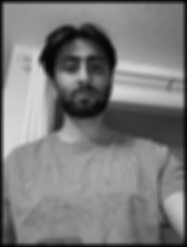
Box filter (4 loops)
Box filter (2 loops)

Box filter (scipy)
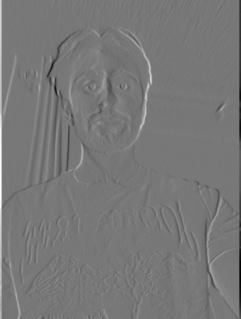
D_x
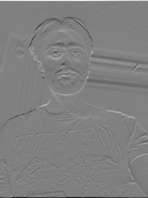
D_y
Part 1.2: Finite Difference Operator
I went with a threshold of 0.25. Lower thresholds picked up a lot of noise in the grass and higher thresholds started to break up the tripod legs and the buildings in the back.
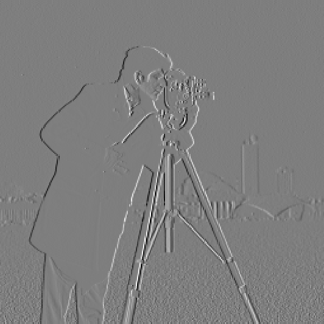
Partial derivative in x
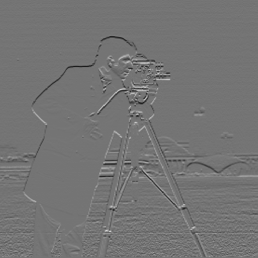
Partial derivative in y
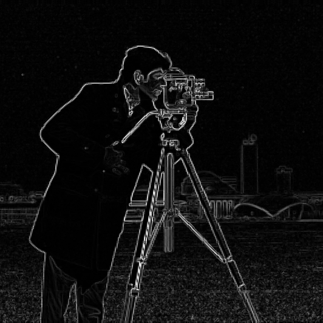
Gradient magnitude
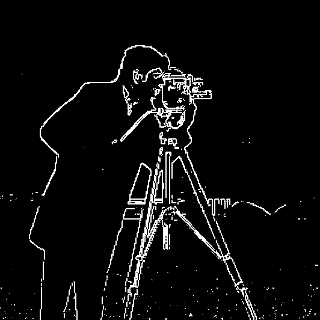
Binarized edges
Part 1.3: Derivative of Gaussian (DoG) Filter
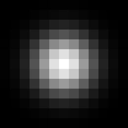
Gaussian filter
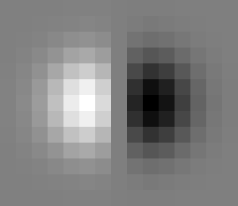
DoG filter (x)
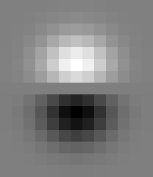
DoG filter (y)
Compared to 1.2 the edges are thicker and smoother, and almost all of the grass noise is gone.
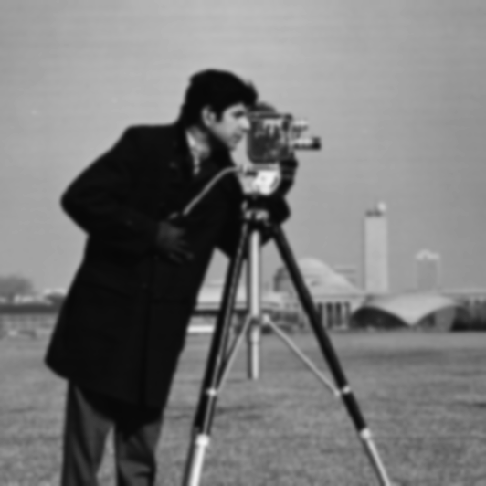
Gaussian blurred
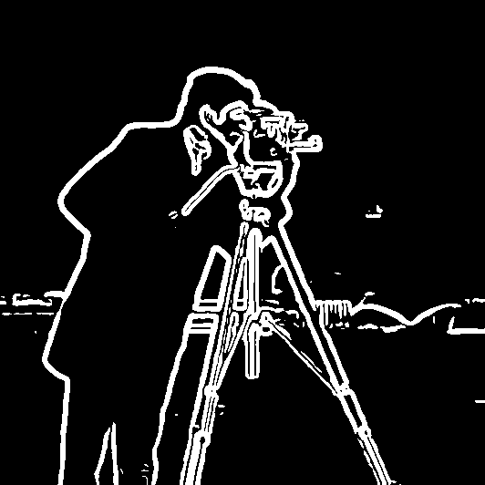
Binarized edges (blurred)

Binarized edges (DoG)
Part 2.1: Image Sharpening
A Gaussian blur keeps the low frequencies (the overall shapes and colors) and removes the high frequencies (the fine details and edges). So if I subtract the blurred image from the original I'm left with just the high frequencies. Adding those back on top of the original, scaled by some amount alpha, makes the edges stand out more.
Taj Mahal: blurred
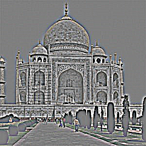
Taj Mahal: high frequencies
Taj Mahal: sharpened (alpha = 1)
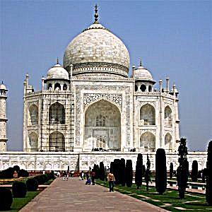
Taj Mahal: sharpened (alpha = 2)
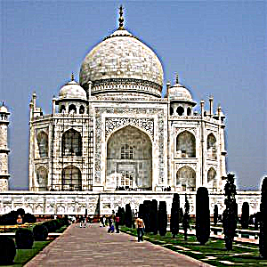
Taj Mahal: sharpened (alpha = 4)
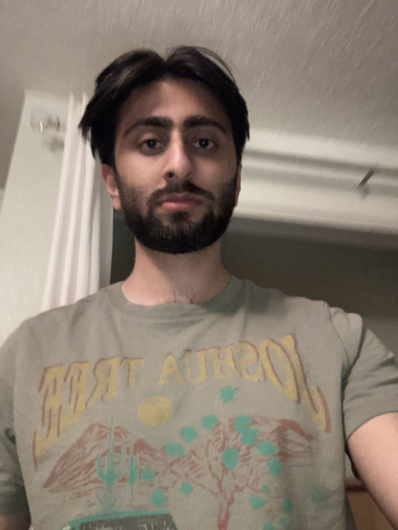
Selfie: original
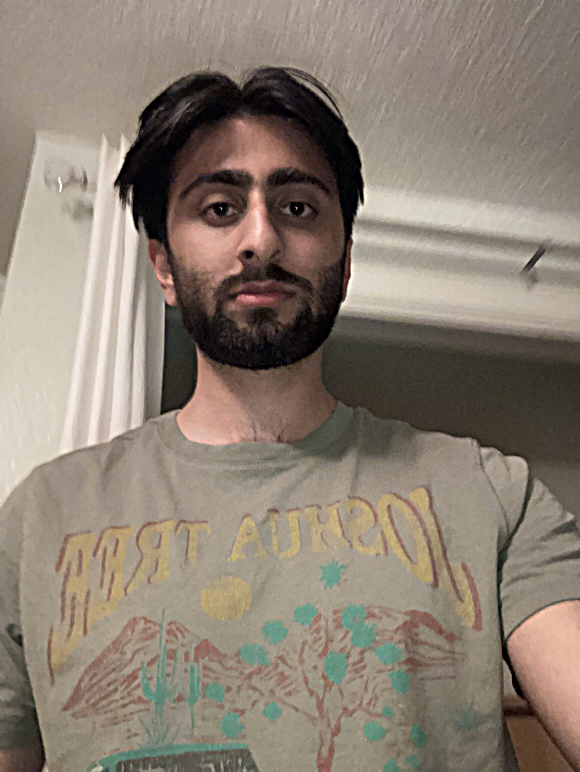
Selfie: sharpened (alpha = 1)
Part 2.2: Hybrid Images
I picked the cutoffs by trying a few combinations and checking which one looked best both up close and far away. I ended up with sigma = 3.5 for Derek's high pass and sigma = 6 for Nutmeg's low pass. With a larger sigma for Derek too much of his face came through and you couldn't see Nutmeg even from far away.
Derek: original
Nutmeg: original
Derek: aligned
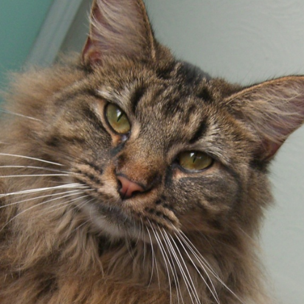
Nutmeg: aligned
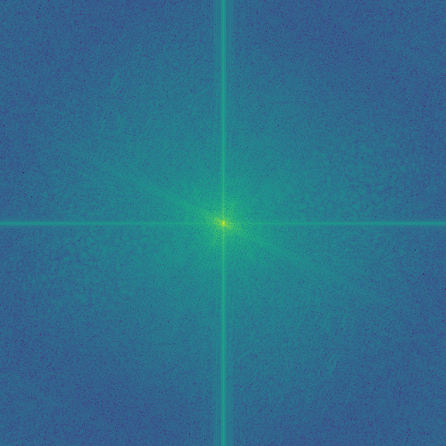
Derek: Fourier transform
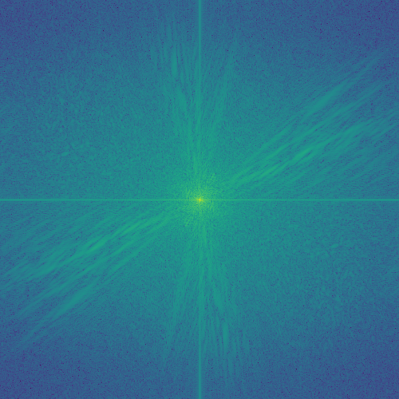
Nutmeg: Fourier transform
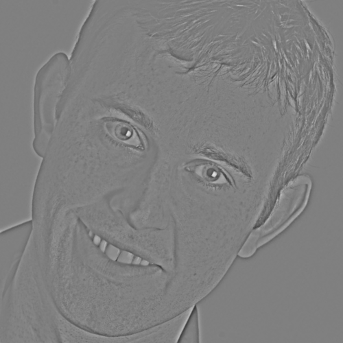
Derek: high pass
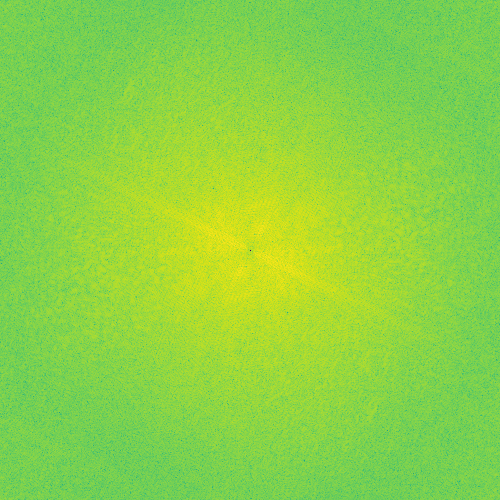
Derek high pass: Fourier transform
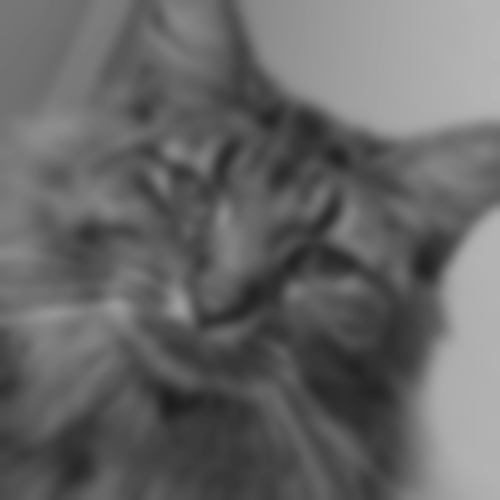
Nutmeg: low pass
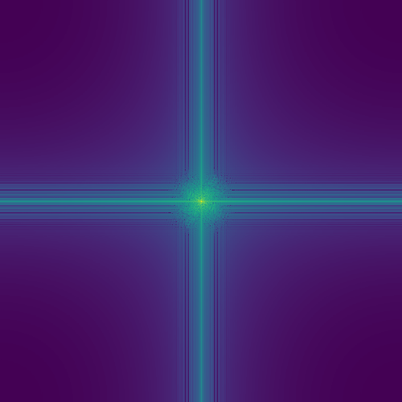
Nutmeg low pass: Fourier transform
Derek + Nutmeg hybrid
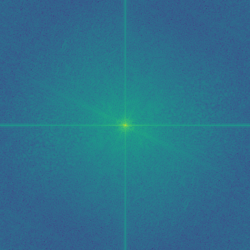
Hybrid: Fourier transform

Selfie: original
Derek: original
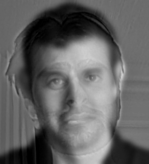
Selfie + Derek hybrid
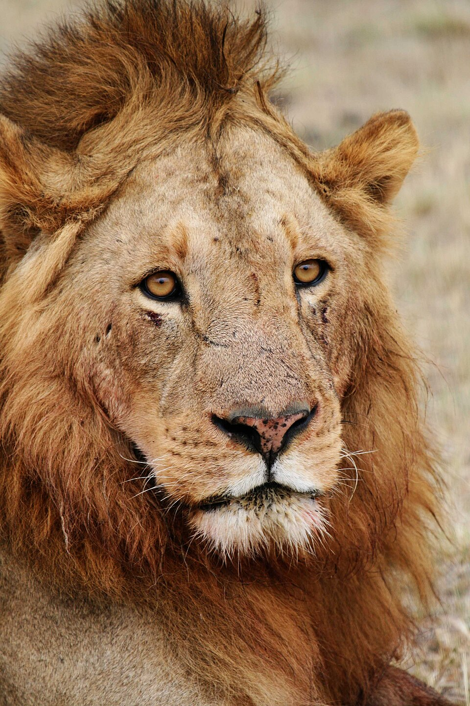
Lion: original
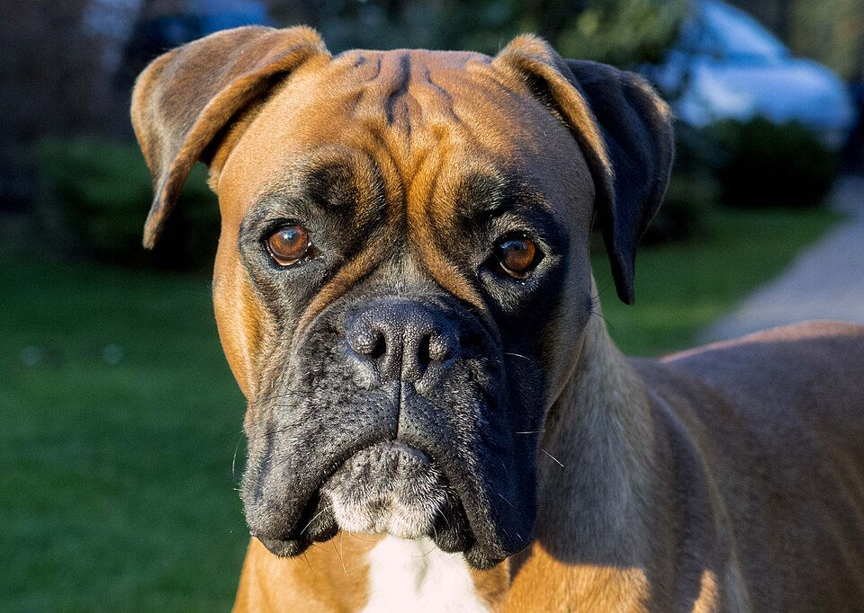
Dog: original
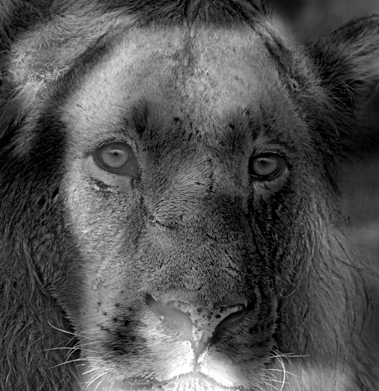
Lion + Dog hybrid
Part 2.3 + 2.4: Gaussian and Laplacian Stacks, Multiresolution Blending
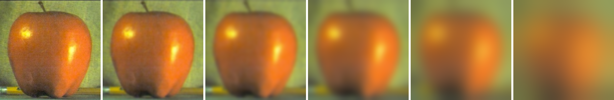
Apple: Gaussian stack
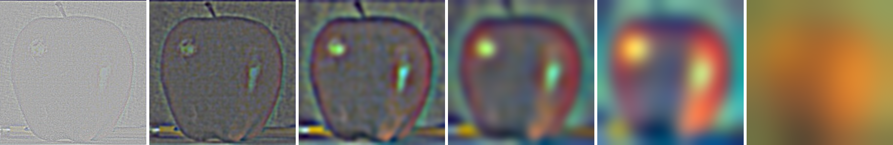
Apple: Laplacian stack
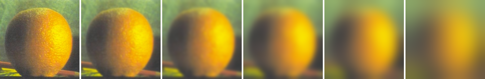
Orange: Gaussian stack
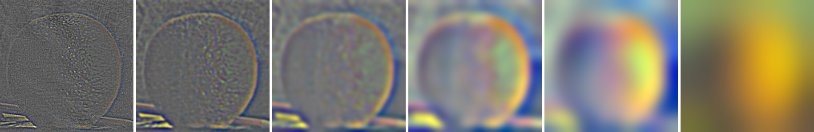
Orange: Laplacian stack
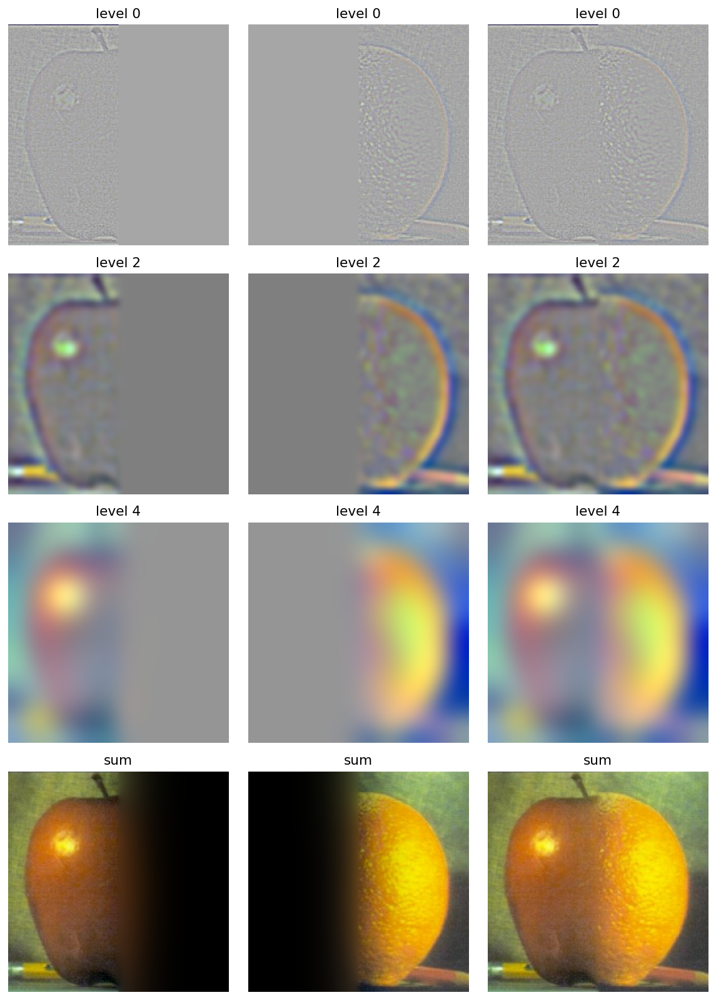
Figure 3.42
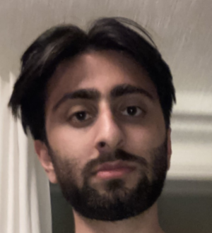
Selfie
Derek
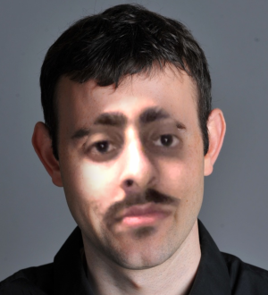
Blended
Taj Mahal
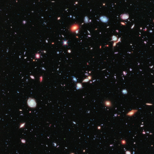
Hubble Deep Field
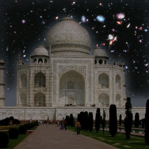
Blended